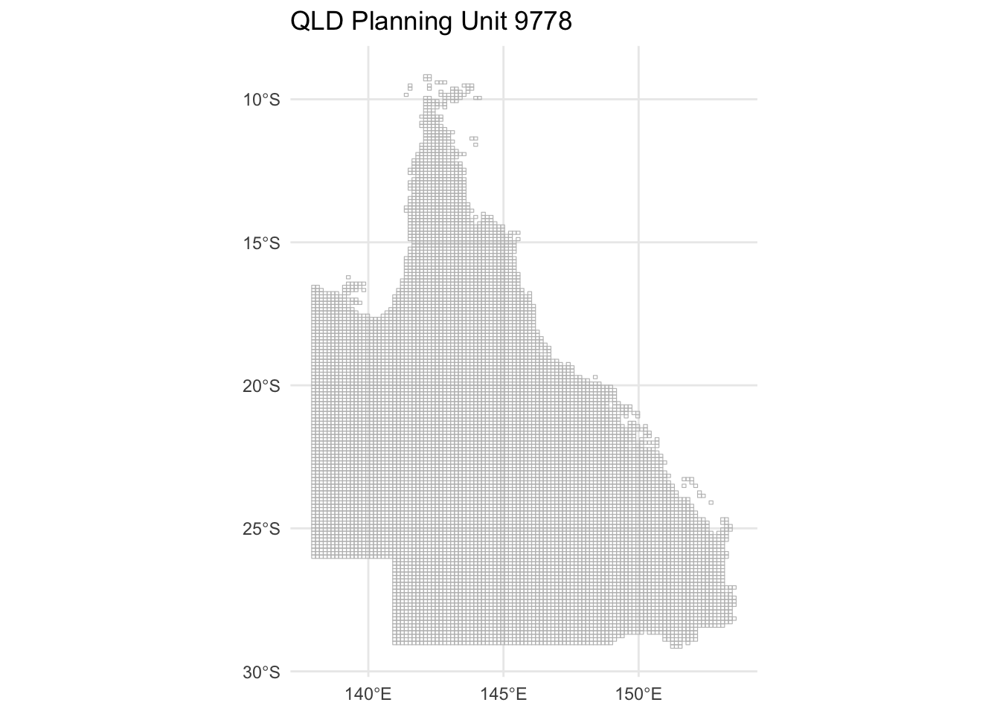
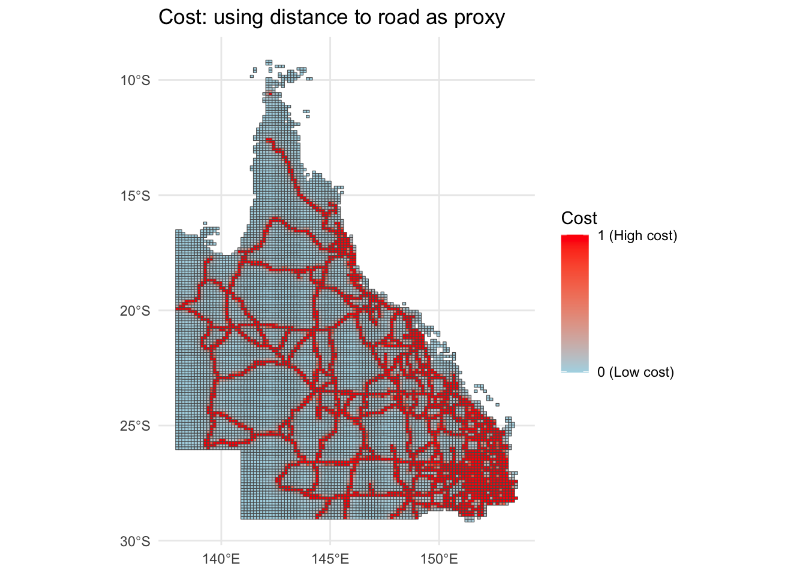
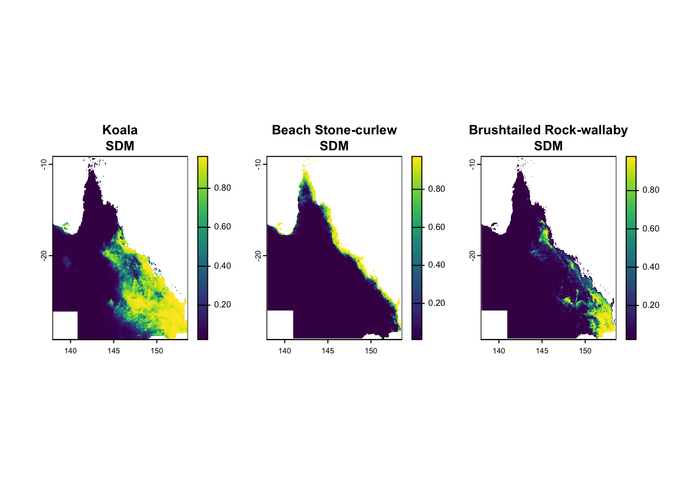
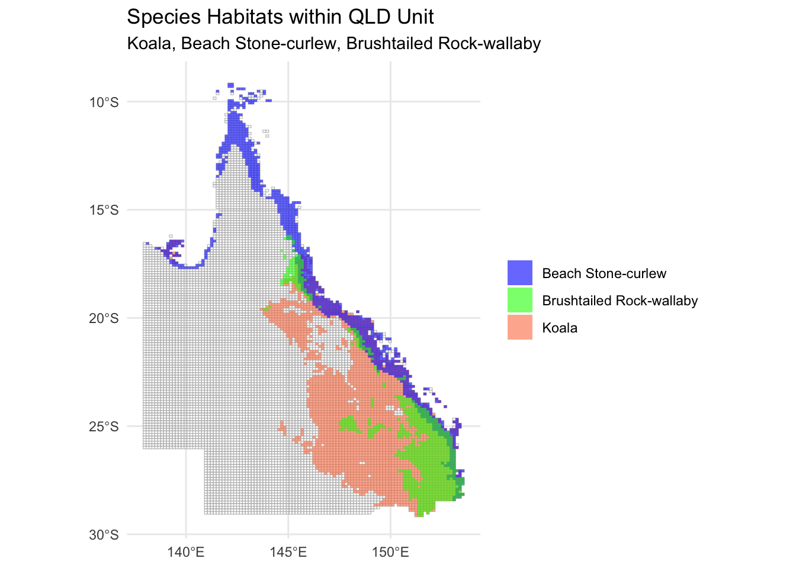

Reading layer `cost-surface-template_dbfd87df-99bc-4229-a607-04e632a67fda_20240828T015655' from data source `/Users/zhaoxiang/Documents/tmp/ecocommons-marxan-integration-poc/ecocommons-marxan-integration-poc/QLD_Koala_Marxan/QLD_Unit/cost-surface-template_dbfd87df-99bc-4229-a607-04e632a67fda_20240828T015655.shp'
using driver `ESRI Shapefile'
Simple feature collection with 9778 features and 2 fields
Geometry type: POLYGON
Dimension: XY
Bounding box: xmin: 137.904 ymin: -29.19145 xmax: 153.6074 ymax: -9.139518
Geodetic CRS: WGS 84
# Get the number of rowsn_rows <-nrow(QLD_Unit)# Plot the shapefile with no fill color and number of rows in the titleggplot(data = QLD_Unit) +geom_sf(fill =NA, color ="gray") +theme_minimal() +ggtitle(paste("QLD Planning Unit", n_rows))

I made a cost layer using the reciprocal of the distance to state-owned road as a surrogate of the cost.
The assumption is: the closer to the state owned road, the more expensive to purchase the unit.
Reading layer `QLD_cost_road' from data source
`/Users/zhaoxiang/Documents/QCIF_doc/QLD_Koala_Marxan/QLD_cost_road.shp'
using driver `ESRI Shapefile'
Simple feature collection with 9778 features and 2 fields
Geometry type: POLYGON
Dimension: XY
Bounding box: xmin: 137.904 ymin: -29.19145 xmax: 153.6074 ymax: -9.139518
Geodetic CRS: WGS 84

Biodiversity features. I used EcoCommons to produce three species’ SDM to start with.
Species 1: koala
Species 2: brush tailed rock-wallaby
Species 3: beach stone curlew
Loading required package: sp

We need to turn these SDMs to binary results (shapefies).
#| echo: falselibrary(terra)library(sf)# Define a function to process each speciesprocess_species <-function(raster_data, QLD_Unit, species_name, output_dir) {# Extract mean raster value for each polygon in QLD_Unit extracted_values <-extract(raster_data, vect(QLD_Unit), fun = mean, na.rm =TRUE)# Rename and update the feature column in QLD_Unitnames(QLD_Unit)[names(QLD_Unit) =="cost"] <-"feature" QLD_Unit$feature <- extracted_values[,2]# Subset polygons where the feature (mean value) is >= 0.5 QLD_species <-subset(QLD_Unit, feature >=0.5)# Write the subset sf object to a shapefile shapefile_base <-file.path(output_dir, species_name)st_write(QLD_species, paste0(shapefile_base, ".shp"), delete_layer =TRUE)# List all the files that belong to the shapefile shapefile_files <-list.files(output_dir, pattern =paste0(species_name, "\\."), full.names =TRUE) shapefile_base_names <-basename(shapefile_files)# Zip the shapefile, only including the base filenames zipfile_path <-file.path(output_dir, paste0(species_name, ".zip")) old_wd <-setwd(output_dir) # Change the working directory to the output directoryzip(zipfile_path, shapefile_base_names)setwd(old_wd) # Change back to the original working directory# Comment out the deletion step for now# file.remove(shapefile_files)}# Set the output directoryoutput_dir <-"/Users/zhaoxiang/Documents/QCIF_doc/QLD_Koala_Marxan/"# Apply the function to each speciesprocess_species(koala, QLD_Unit, "koala", output_dir)
Deleting layer `koala' using driver `ESRI Shapefile'
Writing layer `koala' to data source
`/Users/zhaoxiang/Documents/QCIF_doc/QLD_Koala_Marxan//koala.shp' using driver `ESRI Shapefile'
Writing 2905 features with 2 fields and geometry type Polygon.
Deleting layer `beach_stone_curlew' using driver `ESRI Shapefile'
Writing layer `beach_stone_curlew' to data source
`/Users/zhaoxiang/Documents/QCIF_doc/QLD_Koala_Marxan//beach_stone_curlew.shp' using driver `ESRI Shapefile'
Writing 1013 features with 2 fields and geometry type Polygon.
Deleting layer `brushtailed_rockwallaby' using driver `ESRI Shapefile'
Writing layer `brushtailed_rockwallaby' to data source
`/Users/zhaoxiang/Documents/QCIF_doc/QLD_Koala_Marxan//brushtailed_rockwallaby.shp' using driver `ESRI Shapefile'
Writing 782 features with 2 fields and geometry type Polygon.
### We can also turn them into a csv format# Function to extract presence (1) and absence (0) from raster based on threshold (e.g., 0.5)extract_presence_absence <-function(raster_data, unit) { extracted_values <-extract(raster_data, vect(unit), fun = mean, na.rm =TRUE) presence_absence <-ifelse(extracted_values[, 2] >=0.5, 1, 0)return(presence_absence)}# Apply the function to each species rasterQLD_Unit$koala_presence <-extract_presence_absence(koala, QLD_Unit)QLD_Unit$beach_stone_curlew_presence <-extract_presence_absence(beach_stone_curlew, QLD_Unit)QLD_Unit$brushtailed_rockwallaby_presence <-extract_presence_absence(brushtailed_rockwallaby, QLD_Unit)# Select relevant columns to create a presence-absence data framepresence_absence_df <-data.frame(puid = QLD_Unit$puid, # Assuming 'ID' is the unique identifier for the planning unitKoala = QLD_Unit$koala_presence,Beach_Stone_Curlew = QLD_Unit$beach_stone_curlew_presence,Brushtailed_Rockwallaby = QLD_Unit$brushtailed_rockwallaby_presence)# Write the presence-absence data to a CSV filewrite.csv(presence_absence_df, file.path(output_dir, "presence_absence_species.csv"), row.names =FALSE)# Check the CSV outputprint(head(presence_absence_df))
Reading layer `brushtailed_rockwallaby' from data source
`/Users/zhaoxiang/Documents/QCIF_doc/QLD_Koala_Marxan/brushtailed_rockwallaby.shp'
using driver `ESRI Shapefile'
Simple feature collection with 782 features and 2 fields
Geometry type: POLYGON
Dimension: XY
Bounding box: xmin: 143.7571 ymin: -29.19145 xmax: 153.6074 ymax: -16.16685
Geodetic CRS: WGS 84
# Add an identifying column to each species dataset for the legendkoala_sf$species <-"Koala"beach_stone_curlew_sf$species <-"Beach Stone-curlew"brushtailed_rockwallaby_sf$species <-"Brushtailed Rock-wallaby"# Combine the species shapefiles into one datasetcombined_species_sf <-rbind(koala_sf, beach_stone_curlew_sf, brushtailed_rockwallaby_sf)# Plot the unit (base map) first and overlay the species habitats without borderscombined_plot_with_unit <-ggplot() +geom_sf(data = QLD_Unit, fill =NA, color ="grey") +# Base map (QLD Unit)geom_sf(data = combined_species_sf, aes(fill = species), color =NA, alpha =0.6) +# No borders for speciesscale_fill_manual(values =c("blue", "green", "coral")) +# Colors for each speciestheme_minimal() +labs(title ="Species Habitats within QLD Unit", subtitle ="Koala, Beach Stone-curlew, Brushtailed Rock-wallaby") +theme(legend.title =element_blank())# Display the plotprint(combined_plot_with_unit)

library(sf)library(terra)# Function to extract presence (1) and absence (0) from raster based on threshold (e.g., 0.5)extract_presence_absence <-function(raster_data, unit) { extracted_values <-extract(raster_data, vect(unit), fun = mean, na.rm =TRUE) presence_absence <-ifelse(extracted_values[, 2] >=0.5, 1, 0)return(presence_absence)}# Apply the function to each species raster and add to the QLD_Unit shapefileQLD_Unit$koala_presence <-extract_presence_absence(koala, QLD_Unit)QLD_Unit$beach_stone_curlew_presence <-extract_presence_absence(beach_stone_curlew, QLD_Unit)QLD_Unit$brushtailed_rockwallaby_presence <-extract_presence_absence(brushtailed_rockwallaby, QLD_Unit)# Save the updated QLD_Unit as a new shapefileoutput_shapefile <-file.path(output_dir, "QLD_Unit_with_species_presence.shp")st_write(QLD_Unit, output_shapefile, delete_layer =TRUE)
Warning in abbreviate_shapefile_names(obj): Field names abbreviated for ESRI
Shapefile driver
Deleting layer `QLD_Unit_with_species_presence' using driver `ESRI Shapefile'
Writing layer `QLD_Unit_with_species_presence' to data source
`/Users/zhaoxiang/Documents/QCIF_doc/QLD_Koala_Marxan//QLD_Unit_with_species_presence.shp' using driver `ESRI Shapefile'
Writing 9778 features with 5 fields and geometry type Polygon.
# Verify the presence/absence columnsprint(head(QLD_Unit))